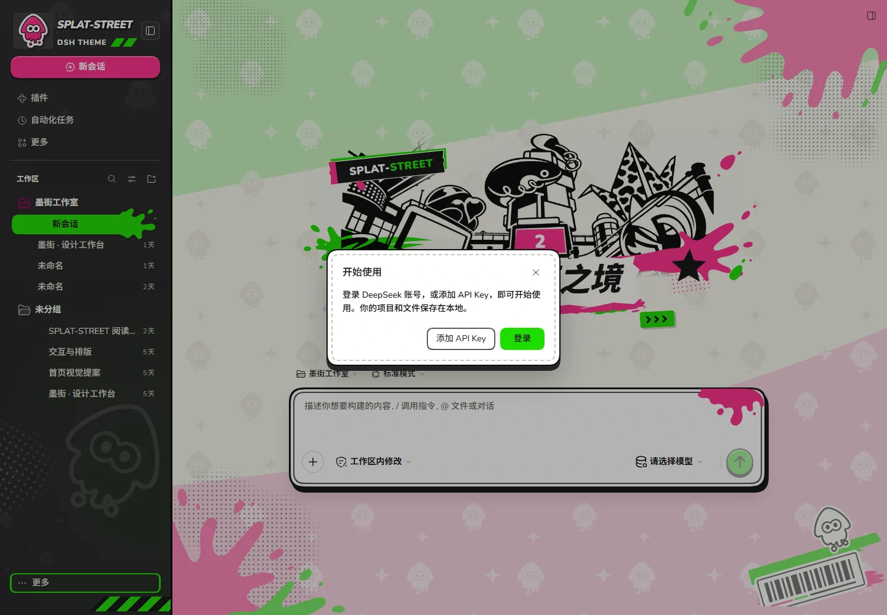
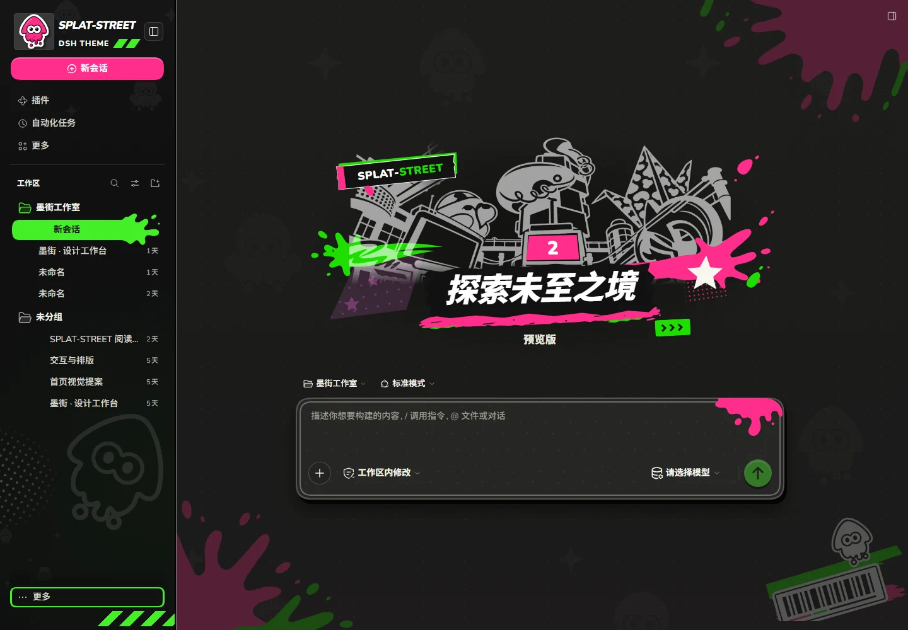
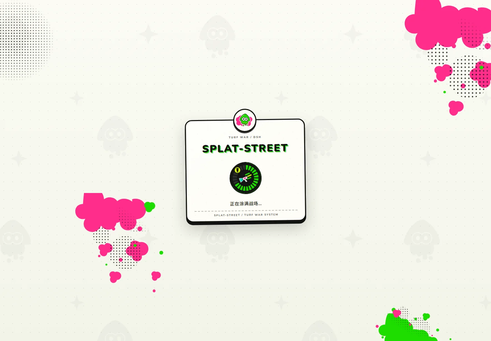

装上
DSH CLI / npm
dsh plugin add dsh-theme-splat-ui
一键把主题插件装进 profile。
DEEPSEEK HARNESS 主题插件 · 官方绿 #1EDC00
一套斯普拉遁 2 风格的 DeepSeek Harness 主题：官方绿/奶油/洋红三色画布、昼夜双战场、三档主墨色与连续画布墨度，原生功能零改动。


预览窗口内直接嵌入真实 DSH DOM 与官方 CSS 夹具。切换日/夜战场、画布墨度或三套主墨色时，样式实时注入真实组件视图。
安装、启用、调整、开涂。主题只通过公开的 ThemeRuntime Token 与 4 个品牌 Slot 调整配色与工作台样式。
装上
DSH CLI / npm
dsh plugin add dsh-theme-splat-ui
一键把主题插件装进 profile。
启用
墨街外观
纸白20%
均衡50%
涂地100%
重启后主题自动接管。
调整
设置 → 内置插件
主墨色官方绿
插画装饰开
纸面网点开
Diff 语法霓虹
在外观页选墨色、墨度与开关。
开涂
新会话
把灵感，涂满全场。
回到工作台，开始写。
推荐在终端直接运行 dsh plugin add dsh-theme-splat-ui，或进入 DSH profile 目录通过 npm 安装；离线安装包可在 GitHub Releases 获取，完整重启 DSH / 桌面端后生效。

或直接运行 DSH CLI：dsh plugin add dsh-theme-splat-ui
localStorage，不写入 Host 设置。关于来源、兼容性与恢复方式。
不是。SPLAT-STREET 是非官方粉丝主题，与 Nintendo 及 DeepSeek 官方没有隶属或背书关系。主题使用原创矢量鱿鱼/章鱼贴纸、基于游戏截图参考生成的广场插画，以及 SVG 装饰；来源与第三方声明见第三方声明。
不会。主题只覆写公开的 ThemeRuntime Token 与 4 个品牌 Slot，侧栏、会话、输入区和快捷键保持 DSH 原生行为。接缝缺失时会自动退回原生界面。
已完成真实 DSH Web 日夜与 390px 窄屏全量验收，以及 Windows 桌面端原生标题栏与侧栏布局实机验证，详细兼容范围见验收记录。
在插件管理里禁用主题，或卸载包后重启。主题安装时快照的根属性会恢复，不会残留画布或外观设置。
把画布墨度调向「纸白 20%」或「均衡 50%」以适配阅读偏好，也可以在设置页关闭插画装饰与纸面网点。夜间模式本身采用炭黑广场，荧光色只保留在主按钮与焦点高光上。